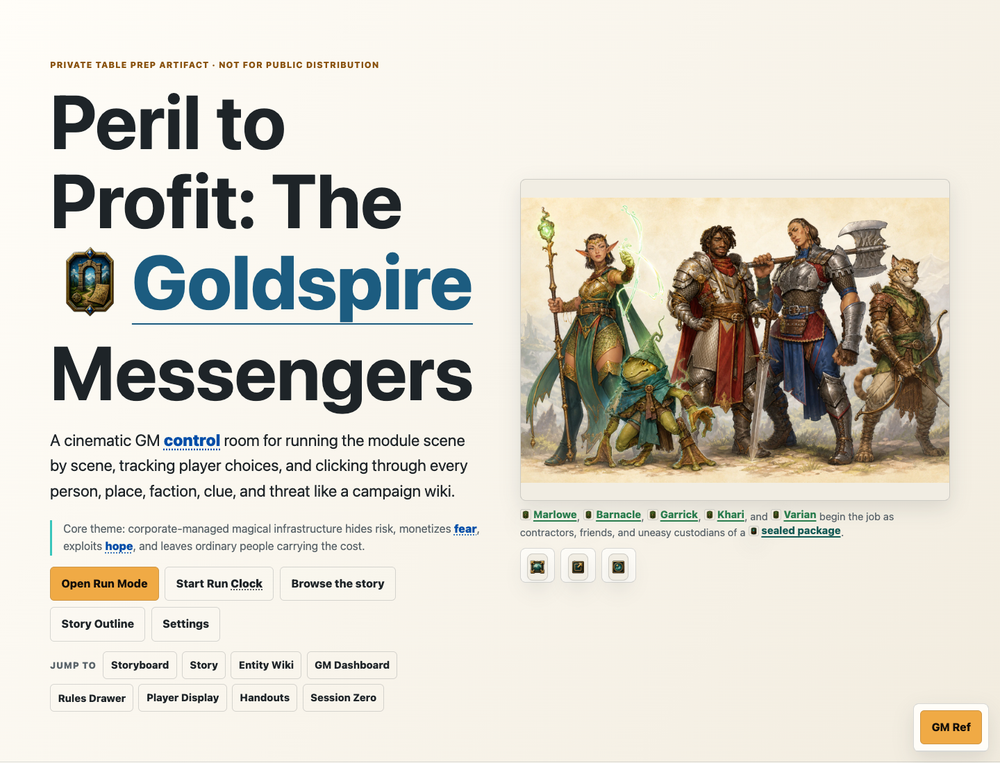
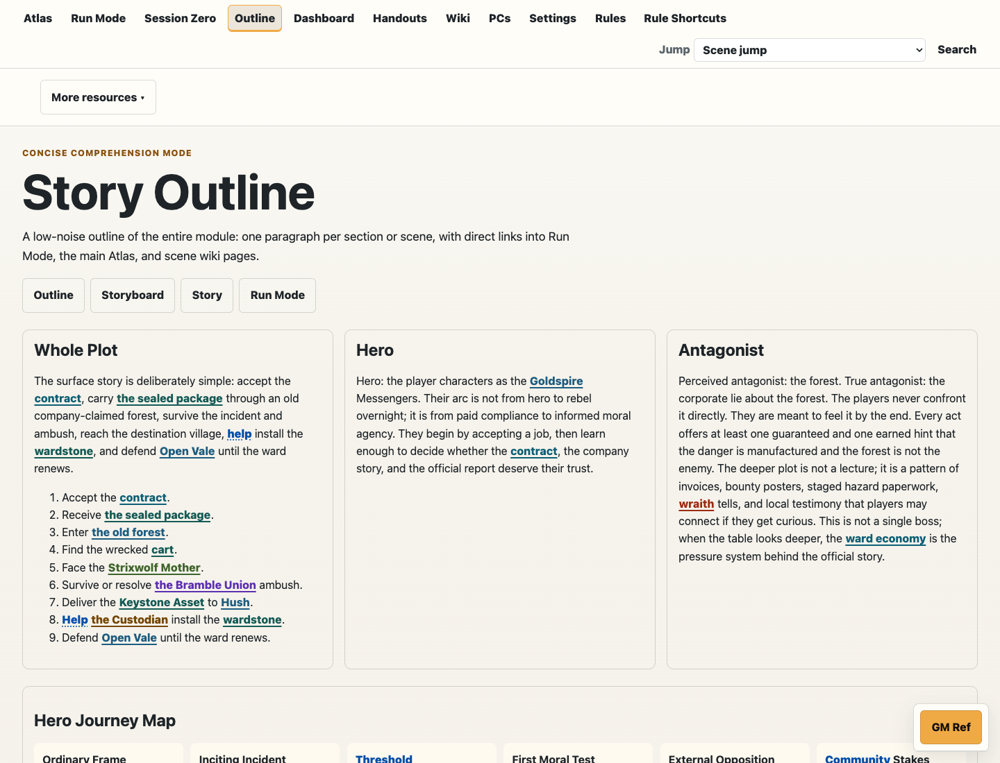
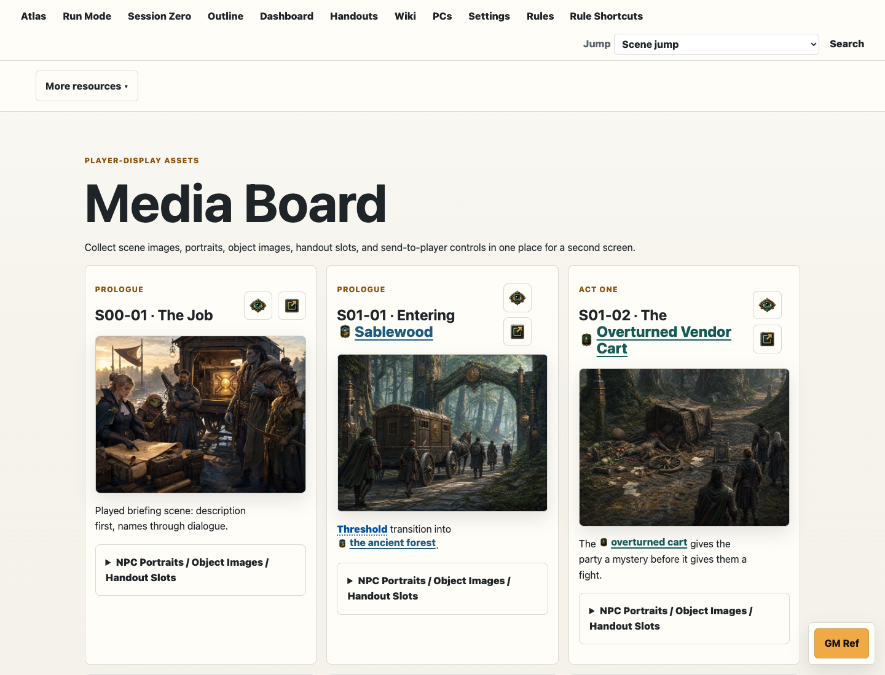
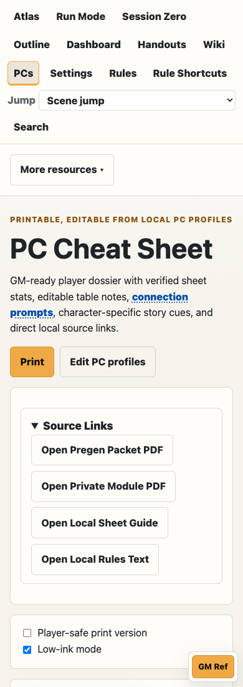

The current generated atlas build records this scene count.
What this is in one minute
Story Atlas is a GM command surface, not a static prep note.
The Goldspire Story Atlas helps a GM understand and run a Daggerheart one-shot by moving between study mode, Run Mode, Player Display, wiki pages, rules references, visual assets, handouts, and QA-backed generated data.
It exists because a live GM needs the next usable beat faster than they need another lore dump. The app keeps player-safe text separate from GM-only context, turns important names into hoverable references, and lets the table-facing view show only what players should see.
The build was AI-first but not AI-owned. Kyle supplied the goal, taste, canon, corrections, and acceptance gates. ChatGPT and Claude shaped strategy and content packets. Codex bound the work into source, generated/captured assets, ran QA, and published.
 1
2
3
1
2
3
- 1Run Mode is a distinct GM operating mode, not just another page.
- 2Player-safe text and GM read-aloud live side by side for table use.
- 3Optional tools, music, and player-display sync stay available without taking over the beat.
What the current app looks like
Proof lives in the surfaces, not only the story.
The case study now shows the product in use: prep mode, Run Mode, Player Display, handouts, outline, media board, and a mobile PC reference. These are not decorative screenshots; they are evidence that the build crossed from prompt text into usable GM tooling.






The vision and problem
The problem was live-use complexity.
NPCs, creatures, locations, factions, items, clues, mechanics, and related wiki entries.
Copied into the generated Story Atlas build with no missing image slots in the current manifest.
The useful question was not whether AI could make a website. It was whether AI collaboration could help a GM build a personal app-like product that survives table use, source rebuilds, visual QA, and public publishing constraints.
The two hard AI challenges
Visual production and project growth were the real tests.
Most AI-build stories stop at "the model made code." This one needed a more useful accounting: what broke, what Kyle had to steer, and what proof made the result credible.


Hard challenge
Visual Assets Were The First Real Bottleneck
Problem
The Atlas needed hundreds of images, but nice-looking generated art was not enough. Assets had to be consistent, transparent when needed, stored in real folders, linked from source, and visible in the generated app.
Action
The workflow shifted to evidence-backed asset handling: generate on removable color fields, recover actual files, remove backgrounds, bind accepted images into source folders, copy them through manifests, and verify them in the app.
Result
The current build manifest records 741 copied Image Gen files, 0 missing Image Gen slots, and 252 entity visual galleries.
27Scenes
252Entities
904Optimized online assets
0Online visual QA failures
Hard challenge
Project Growth Became The Second AI Challenge
Problem
The project expanded from a single prompt into scenes, entities, wiki pages, player display, handouts, music, QA scripts, online publishing, and source-generated Obsidian notes.
Action
Codex kept changes in source modules and generated outputs from those sources. Kyle kept narrowing the work back to live-GM usefulness: player-safe text, GM-only context, real table content, and one verified lane at a time.
Result
The Atlas now has 27 scenes, 252 entities, a lean online bundle, separate local/private output, and a case-study artifact that can be audited independently.
High-level method
Idea to prompt to source to proof.
Visual thesis
An editorial field report for builders: parchment-warm, proof-heavy, and grounded in real Story Atlas screens and assets.
Content thesis
In the first scan, a reader should understand the GM problem, the AI collaboration loop, and the two hard challenges: visual asset production and project-growth control.
Register
Public case-study shareable / builder explainer.
Design dials
Medium variance, low motion, medium density, high trust, source screenshots and generated Story Atlas assets as the reference source.
1. IdeaGM needs a live command surface
2. PromptVision, outputs, constraints, QA
3. AI cyclesChatGPT, Claude, Codex
4. SourcePython modules and data
5. ReviewKyle checks taste and truth
6. PublishQA, lean assets, GitHub Pages
Workflow deep-dive
Five phases, each organized by problem, action, and result.
Each phase keeps the same spine: the problem Kyle faced, the action taken with AI help, the result that mattered, then the human/AI split and the evidence trail. That makes the workflow easier to audit than a pile of raw thread summaries.
Discovery and First Intent
Phase
Discovery and First Intent
Problem
The first request was broad enough to become endless unless it became source-generated and QA-backed.
Action
The source generator and project map turned the prompt into concrete files, commands, and proof points.
Result
The app baseline produced 27 scenes, 252 entities, and a synchronized generated Story Atlas.
What Kyle asked
Kyle asked for a dynamic, image-rich, linked GM Story Atlas that could act as a scene guide, wiki, visual board, data source, and Obsidian vault.
What AI handled
Codex inspected the seed packet and repo map, preserved the seed instead of replacing it, and built toward a source-generated multi-surface deliverable.
What Kyle checked
Kyle checked continuity, tone, player-facing separation, visual intent, and whether the tool was useful to run a table rather than just pretty to read.
What changed
The project moved from a converted/private table packet into a generated app-like GM surface with scenes, entities, assets, vault notes, and QA reports.
Challenges facedThe first request was broad enough to become endless unless it became source-generated and QA-backed.
Failures and fixesThe source generator and project map turned the prompt into concrete files, commands, and proof points.
Strength of prompt/processThe opening prompt named the product, outputs, UX north star, continuity rules, visual rules, and done criteria in one place.
Pain pointLarge prompts invite agents to satisfy the visible checklist while missing the human reason behind the tool.
Workflow supportProject map, packet registry, build manifest, and browser QA kept the work from becoming scattered.
Risk / follow-upA public case study can over-share private table text if evidence is copied without selection.
Architecture and Content Model
Phase
Architecture and Content Model
Problem
Generated output can look finished while the real source of truth lives elsewhere.
Action
The repo now documents edit locality and generated-output boundaries in `docs/project-map.md` and `docs/repo-hygiene.md`.
Result
Future changes can target the right source module instead of hand-editing `dist/story-atlas/`.
What Kyle asked
Kyle wanted the Atlas to behave like a GM control room and connected wiki, not a generic summary page.
What AI handled
Codex made the app source-driven around `story-atlas/src/`, generated pages/data/vault output, and added modules for scope, mechanics, locations, factions, items, clues, music, and Run Mode.
What Kyle checked
Kyle kept correcting what needed to be content versus instruction: usable GM words, real player display text, real Q-card details, and actual table mechanics.
What changed
The project gained a repeatable architecture: source modules produce HTML, JSON, Obsidian notes, assets, QA reports, and online publishing output.
Challenges facedGenerated output can look finished while the real source of truth lives elsewhere.
Failures and fixesThe repo now documents edit locality and generated-output boundaries in `docs/project-map.md` and `docs/repo-hygiene.md`.
Strength of prompt/processSource-first generation made global fixes possible: one change could rebuild app pages, data, and vault mirrors.
Pain pointThe source tree grew into many specialized modules and needed strong project-map documentation.
Workflow supportThe project-specific skill, AGENTS notes, and repo docs became part of the operating system.
Risk / follow-upWithout the project map, a future agent could patch generated HTML and lose changes on rebuild.
Build and Iteration Loops
Phase
Build and Iteration Loops
Problem
AI tends to produce plausible labels and reminders when the table needs exact content.
Action
Dedicated QA scripts were added for link coverage, story scope, music, exports, location assets, mechanics, and Run Mode.
Result
The current online QA set covers home, Run Mode, Player Display, handouts, PC cheat sheet, and local-only fallbacks.
What Kyle asked
Kyle pushed for linked mechanics, hover cards, Run Mode, Player Display, music controls, living-place detail, and richer visual evidence.
What AI handled
Codex added and repaired generated UI systems, then rebuilt and re-tested instead of making one-off page edits.
What Kyle checked
Kyle checked whether the app answered live-GM questions quickly: where to click, what to show players, what changed in the fiction, and what stayed hidden.
What changed
The Atlas became a live prep/run tool: study mode, Run Mode, player display, references, handouts, maps, clue boards, and asset galleries.
Challenges facedAI tends to produce plausible labels and reminders when the table needs exact content.
Failures and fixesDedicated QA scripts were added for link coverage, story scope, music, exports, location assets, mechanics, and Run Mode.
Strength of prompt/processPrompt constraints like 'actual content, not instructions' pushed the system toward speakable and usable table output.
Pain pointFeature requests landed across many files, which made source ownership and QA increasingly important.
Workflow supportClaude handoff packets supplied structured design/content; Codex bound and verified them in the app.
Risk / follow-upCandid public process needs to explain failures without turning the case study into a postmortem of every detour.
QA and Proof Gathering
Phase
QA and Proof Gathering
Problem
Some raw token counters and durations are technically present but not clean enough for precise public claims.
Action
The Story Atlas QA lane uses bundled Node/Playwright paths when system Python lacks browser packages.
Result
The online visual QA report records 6 rendered surfaces with no console errors, page errors, broken visible images, or horizontal overflow.
What Kyle asked
Kyle wanted real proof: screenshots, QA reports, browser checks, and no unsupported claims.
What AI handled
Codex ran automated checks, used Playwright browser proof, generated online QA screenshots, and built lean online publishing manifests.
What Kyle checked
Kyle checked the difference between a useful public proof and a pile of private logs.
What changed
The project gained a public-evidence habit: proof screenshots, manifests, QA report text, and source-indexed claims.
Challenges facedSome raw token counters and durations are technically present but not clean enough for precise public claims.
Failures and fixesThe Story Atlas QA lane uses bundled Node/Playwright paths when system Python lacks browser packages.
Strength of prompt/processBuild and QA manifests provide stronger evidence than memory or vibes.
Pain pointBrowser tooling varies by environment, so QA scripts need fallbacks.
Workflow supportUX Heuristic Compass, Playwright, Design Taste review, and source reports create an audit trail.
Risk / follow-upCredibility fails if the case study overstates metrics that are not cleanly grounded.
Publication and Handoff
Phase
Publication and Handoff
Problem
A rich app with hundreds of images can exceed GitHub comfort limits if copied blindly.
Action
The Pages repo is nested under `deploy/gm-pages` and the public route is verified before handoff.
Result
The case study publishes as a separate shareable without changing the live Story Atlas route.
What Kyle asked
Kyle wanted the local version protected and the online version lean, public, and GitHub Pages compatible.
What AI handled
Codex created a separate online bundle, optimized large assets, excluded local-only folders, and kept Google Drive/YouTube as fallback hooks rather than first choices.
What Kyle checked
Kyle checked that the public URL works without sacrificing the full local GM build.
What changed
The Story Atlas now has separate local and online deliverables with shortcuts, manifests, and publishing policy.
Challenges facedA rich app with hundreds of images can exceed GitHub comfort limits if copied blindly.
Failures and fixesThe Pages repo is nested under `deploy/gm-pages` and the public route is verified before handoff.
Strength of prompt/processThe online builder cut size while leaving local originals intact.
Pain pointPublishing introduces a second repo and one more place to verify.
Workflow supportShareables MCP contracts, GitHub Pages workflow, and repo hygiene rules shape the public artifact.
Risk / follow-upA shareable can become a second product unless v1 is shipped before further enrichment.
Prompt and exchange examples
Representative exchanges, shown as decisions.
The useful unit was not "a prompt went in and output came out." The useful unit was a loop: goal, AI output, human decision, next move. That pattern kept the work grounded when the project got large.
Initial Product Prompt
GoalTurn a private table packet into a dynamic Story Atlas and Obsidian vault.
AI outputCodex created a source-generated app/vault/data architecture instead of a one-off summary page.
Human decisionKyle kept the seed packet as source truth and pushed the app toward live-GM usefulness.
Next moveBuild the generator, bind images, and run QA from source.
Image Pipeline Correction
GoalStop visual work from stalling when generated images were not already materialized as local files.
AI outputCodex used recovery paths, accepted source folders, and transparent/chroma asset lanes.
Human decisionA generated picture only counted once it existed in the project and survived a rebuild.
Next moveUse manifests, source folders, and browser screenshots as evidence.
Reference Link Repair
GoalMake mechanics and wiki terms behave like usable references everywhere.
AI outputCodex fixed linkification at source level and added coverage checks.
Human decisionThe fix had to be global, not a patch on one visible page.
Next moveRebuild, sample rendered pages, and keep source ownership clear.
Run Mode Music Split
GoalLet the GM choose/control music while the player-facing display plays audio.
AI outputCodex added the music manifest, Run Mode controls, and Player Display audio output.
Human decisionV1 stayed manual and predictable instead of pretending to auto-score every scene.
Next moveVerify display wiring and keep local MP3 handling private.
First prompt excerpt
The first prompt is kept here as evidence, but collapsed so it does not dominate the reader's first pass.
A dynamic, image-rich, linked GM Story Atlas for The Goldspire Messengers that lets me understand the module scene-by-scene, click through every NPC/location/creature/item/faction like a wiki, and import the same content into Obsidian as a connected knowledge graph.
PROJECT:
Build a dynamic HTML deliverable and Obsidian-compatible Markdown vault for Kyle’s private-table Daggerheart adaptation:
Peril to Profit™: The Goldspire Messengers.
This is not just a summary page. It is a GM Story Atlas: a visual, interactive, deeply connected story tool that helps Kyle understand, prep, run, and expand the module.
PRIMARY OUTPUTS:
1. A dynamic HTML artifact.
2. A matching Obsidian-compatible Markdown vault.
3. AI-generated visual assets for scenes, NPCs, creatures, locations, factions, props, clues, and handouts.
4. Data files that keep the HTML and vault in sync.
5. A QA report.
Use the uploaded Markdown packet as the project source:
- CODEX
[...]
PRIMARY OUTPUTS:
1. A dynamic HTML artifact.
2. A matching Obsidian-compatible Markdown vault.
3. AI-generated visual assets for scenes, NPCs, creatures, locations, factions, props, clues, and handouts.
4. Data files that keep the HTML and vault in sync.
5. A QA report.
Use the uploaded Markdown packet as the project source:
- CODEX_MASTER_PROMPT.md
- docs/
- data/scenes.json
- data/entities.json
- obsidian_vault/
The included packet is the source-of-truth seed. Expand it, but do not throw it away.
CORE STORY SPINE:
The PCs begin as paid contractors or trusted associates working with Marlowe Fairwind and Emeris Crown Holdings. They escort a sealed Keystone Asset through Sablewood™ Logistics Preserve to Hush™ Community Enclave.
The story follows this structure:
- Prologue: The Contract
- Act One: The Logistics Incident
- Act Two: Cargo Reclaimers
- Act Three: Seeking a Custodian
- Act Four: The Hanging Office
- Act Five: The Ward Ren
[...]
UX NORTH STAR:
The HTML should feel like a cinematic GM control room:
- acts broken into scenes,
- each scene with a large expandable image,
- short caption,
- short description,
- long cinematic storyboard description,
- GM-only notes,
- player-facing read-aloud,
- checks/rolls,
- dialogue examples,
- sensory details,
- choices and consequences,
- linked NPCs/locations/items/factions,
- hover cards,
- dedicated entity pages,
- and Obsidian-style interconnectivity.
HTML STRUCTURE:
Create a static site unless a framework already exists.
Recommended structure:
story-atlas/
index.html
styles.css
app.js
data/
scenes.json
entities.json
relationship-map.json
assets/
scenes/
entities/
logos/
handouts/
pages/
entities/
scenes/
locations/
factions/
obsidian_vault/
MAIN PAGE REQUIREMENTS:
The main index.html should include:
- hero header with title, pitch, and core theme,
- symbol/color
[...]
SCENE CARD REQUIREMENTS:
Every scene must include:
- scene ID,
- act/sub-act,
- title,
- story beat symbols,
- image,
- image caption,
- short description,
- long cinematic storyboard description,
- player-facing read-aloud,
- GM-only notes,
- sensory details,
- body language notes,
- sample dialogue,
- checks/rolls,
- choices/consequences,
- clues,
- loot,
- linked entities,
- payoff flags,
- image prompt used.
ENTITY LINK SYSTEM:
Every important name should be hoverable and clickable:
- NPCs
- creatures
- monsters
- factions
- companies
- locations
- items
- clues
- props
- mechanics/conditions if useful
Hover/focus preview should show:
- portrait or thumbnail,
- entity type,
- icon,
- role,
- one-line summary,
- tags,
- stat summary if combatant,
- scenes where it appears.
Clicking opens a dedicated page with:
- full bio,
- image,
- role in story,
- relationships,
- appears-in scenes,
- secrets,
- inventory/equipment,
- loot/searc
[...]
ENTITY LINK SYSTEM:
Every important name should be hoverable and clickable:
- NPCs
- creatures
- monsters
- factions
- companies
- locations
- items
- clues
- props
- mechanics/conditions if useful
Hover/focus preview should show:
- portrait or thumbnail,
- entity type,
- icon,
- role,
- one-line summary,
- tags,
- stat summary if combatant,
- scenes where it appears.
Clicking opens a dedicated page with:
- full bio,
- image,
- role in story,
- relationships,
- appears-in scenes,
- secrets,
- inventory/equipment,
- loot/search results,
- stat block if applicable,
- sample dialogue,
- GM handling notes,
- linked related entities.
ENTITY COLOR / SYMBOL SYSTEM:
Use a consistent visual language:
- NPC / Ally: warm amber, icon 👤
- Creature / Animal: moss green, icon 🐾
- Enemy / Combatant: red-orange, icon ⚔
- Faction / Union / Community: violet, icon 🏴
- Corporation / Company: gold, icon 🏢
- Location: blue, icon 🏛
- Item / Asset: teal, ic
[...]
VISUAL GENERATION:
Generate:
- one clean party reference image,
- one image per scene,
- one image per important NPC,
- one image per important creature,
- one image per important location,
- one logo/brand mark per faction/company when useful,
- one image per important object/clue when useful.
Store image prompts and outputs in both data JSON and Obsidian notes.
Critical visual continuity:
- Strixwo
1
2
- 1The display is intentionally simple: title, premise, and table-facing beats.
- 2Bullet points are player-safe output, not GM-only process notes.
Tools, skills, and system map
What each tool actually did.
ChatGPTStrategy, framing, public critiqueGap analysis and case-study structure.
Claude / Claude CodeStructured design/content packets and prose auditClaude handoff context and recovery bundles.
CodexLocal implementation and publishingSource modules, generated app, screenshots, QA, GitHub Pages.
Shareables MCPPublic-shareable workflow contractRoute, manifest, source ingestion, validation, review, stage/publish pattern.
UX Heuristic CompassUX audit lensRendered surface review and report-ready thinking.
PlaywrightBrowser proofFresh screenshots and rendered QA.
communication-story-crafterNarrative clarityReader outcome before technical process.
html-presentation-builderProgressive HTML structureOne job per section with expandable depth.
design-taste-gateVisual credibilityAvoid generic AI case-study styling.
frontend-uxResponsive interactionMobile, anchors, disclosures, screenshots, no overflow.
learning-experience-designerTransferable patternBuilder appendix and practical takeaway.
vibe-checkScope controlShip a useful v1 instead of endless polish.
project-structure-architectFile organizationSeparate source, content, data, assets, public bundle, QA.
Transparent-background image pipeline
The visual sub-case-study that made the process concrete.
Transparent-background image pipeline. The repeatable move was to generate on a removable color field, recover the real file, remove the background, and bind the accepted transparent result into the source asset folders.
One distinctive part of the build was not just generating fantasy art. It was turning generated art into usable app assets: blue-screen or green-screen generations, accepted source folders, transparency cleanup, manifests, and generated pages that could use the assets consistently.
Visual pipeline
Turning AI images into app assets
Problem
AI could produce impressive pictures, but the app needed transparent characters, stable filenames, source ownership, and proof that assets rendered after rebuilds.
Action
Use chroma backgrounds, transparent cutouts, accepted asset folders, generated manifests, and rendered screenshots.
Result
The current build records 741 copied Image Gen files, 0 missing Image Gen slots, and 252 entity visual galleries.


Characters and creatures became product evidence.
The final shareable uses real Story Atlas assets, not generic AI-process diagrams. That matters because the product was meant to help a GM recognize people, places, and threats at speed.


AI strengths and weaknesses
What AI was good at
Generating many visual candidates, prompt variants, character ideas, and sourceable image lanes quickly.
Where AI was weak
It could claim an image existed before it was materialized, drift continuity, or produce art that looked nice but did not fit the app surface.
How Kyle overcame it
Accepted assets had to land in real source folders, appear in manifests, survive rebuilds, and pass visual/browser checks.
Results and reality check
What worked, what failed, what mattered.
Outcome
What worked
Problem
The prompt was large, but it named a real use case: a GM needs a live command surface with player-safe layers, GM-only context, visuals, and proof.
Action
Codex kept the work source-generated; Kyle kept checking usefulness, taste, canon, and boundaries.
Result
The app now has scenes, entities, generated pages, visual assets, Run Mode, Player Display, handouts, QA reports, and a lean online bundle.
Reality check
What failed before it improved
Problem
AI drifted toward plausible labels, generated-output edits, generic proof language, and visuals that looked nice before they were usable assets.
Action
The workflow added source ownership, manifests, screenshot QA, public-safety scans, and a rule that a claim needs evidence nearby.
Result
The public case study can now show the messy middle without pretending the build was automatic or frictionless.
What ChatGPT did
Helped frame the public narrative, critique gaps, sharpen prompts, and convert scattered ambition into a builder-facing case study.
What Claude did
Produced structured design/content packets and prose audit material used as handoff inputs for the app work.
What Codex did
Inspected the repo, wrote source modules, generated outputs, copied/bound assets, ran QA, captured screenshots, and published.
What Kyle did
Owned canon, taste, scope, corrections, acceptance, and the decision that this should be a table-use tool instead of a generic wiki.
What stayed manual
Final taste, canon calls, spoiler boundaries, whether a surface was useful at the table, and when to stop polishing.
What was automated but reviewed
Source generation, page builds, linkification, image copying, online asset optimization, screenshots, and QA reports.
What remains transparent evidence
Screenshots, manifests, QA reports, source modules, asset folders, prompt excerpts, thread summaries, and GitHub Pages output.
From the online asset manifest.
The lean Pages payload, separate from the local GM build.
From the online visual QA report.
1
2
- 1Evidence of breadth
- 2Generated handout surface
Builder pattern
If you wanted to do this, copy the pattern.
1. Start with the job
Name the live use case, audience, outputs, and what success looks like in the real world.
2. Force source discipline
Make AI write into source files and data, then regenerate outputs instead of patching artifacts by hand.
3. Review like an owner
The human checks truth, taste, safety, scope, and whether the result works in the moment of use.
4. Make proof visible
Use screenshots, manifests, tests, and QA reports so claims are not just confidence.
5. Publish an 80 percent useful version
One QA pass, one refinement pass, then ship. More polish becomes a new version.
6. Keep local and public separate
The local GM build can stay rich and private while the public bundle stays lean and web-compatible.
Read more about the raw process
Appendix
Thread evidence
| Thread | Found | Window | Public use |
|---|---|---|---|
| 019ec043-286e-7412-9f39-038840412edc | yes | 2026-06-13T09:14:54.102Z to 2026-06-15T21:32:36.878Z | Initial build and reframe |
| 019ecdf3-6f1e-7672-a644-5fa1a43b8aad | yes | 2026-06-16T01:02:36.194Z to 2026-06-16T01:03:39.012Z | Final reframe and QA |
| 019edce0-973e-7d02-86f7-8d75cb0df154 | yes | 2026-06-18T22:36:29.135Z to 2026-06-18T22:44:52.892Z | Later generated-content pass |
| 019ee2be-04a5-73a0-bb18-0c42dbaeba10 | yes | 2026-06-20T01:56:08.109Z to 2026-06-20T04:11:25.080Z | Visual/content iteration |
| 019ee65c-0a48-7713-a6dc-444679767f90 | yes | 2026-06-20T18:47:53.678Z to 2026-06-20T18:54:14.714Z | Recovery and hardening |
| 019ecd67-efe4-7e11-b104-d51ac582b404 | yes | 2026-06-15T22:30:28.989Z to 2026-06-20T20:24:19.845Z | Packet/handoff lane |
| 019ef156-c6f2-7a93-8bef-7545556d63ca | yes | 2026-06-22T21:58:14.338Z to 2026-06-23T21:57:35.060Z | Run Mode music |
| 019ef19b-c60e-7de0-8da4-d7bf3ca305ec | yes | 2026-06-22T23:13:07.013Z to 2026-06-25T22:51:51.777Z | Publication/online cleanup |
| 019ed2e7-828e-7512-927f-733156cfcde4 | yes | 2026-06-17T00:07:30.374Z to 2026-06-17T01:33:15.073Z | Reference linkification |
| 019ed323-8239-7d93-81c0-34fb45de8902 | yes | 2026-06-17T01:13:01.500Z to 2026-06-17T01:51:12.690Z | Follow-up reference QA |
Script list
story-atlas/src/build_atlas.pystory-atlas/src/qa_atlas.pystory-atlas/src/qa_reference_link_coverage.pystory-atlas/src/qa_story_scope.pystory-atlas/src/qa_slideshow_mode.pystory-atlas/src/qa_music_player.pyscripts/build_online_atlas.pyscripts/recover_codex_imagegen.pyshareables/story-atlas-ai-build-case-study/scripts/capture_story_atlas_screenshots.cjsshareables/story-atlas-ai-build-case-study/scripts/build_shareable.pyshareables/story-atlas-ai-build-case-study/scripts/qa_shareable.cjs
Skills and MCP inventory
- Peril to Profit project skill
- project-structure-architect
- communication-story-crafter
- html-presentation-builder
- design-taste-gate
- frontend-ux
- learning-experience-designer
- vibe-check
- Shareables MCP
- UX Heuristic Compass MCP
- GitHub Pages repo
Evidence index
| ID | Source | Claims |
|---|---|---|
| build-manifest | dist/story-atlas/BUILD_MANIFEST.json | None scenes; None entities; None Image Gen files copied; None missing Image Gen slots; None entity visual galleries |
| online-asset-manifest | dist/story-atlas-online/ONLINE_ASSET_MANIFEST.json | 904 optimized assets; 1953 rewritten files; 750539128 output bytes; 2014839273 bytes saved |
| online-visual-qa | qa/online-visual-qa/online-visual-qa.json | 6 rendered surfaces; 0 failures |
| thread-logs | ~/.codex/sessions | 10 supplied Codex thread logs found locally; dates span June 13-23, 2026 across supplied representative threads |
| asset-inventory | Story Atlas source asset folders | 840 image files inventoried across selected source/public asset lanes |
| shareable-assets | shareables/story-atlas-ai-build-case-study/public/assets | 19 curated public shareable assets copied |